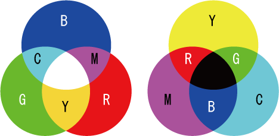
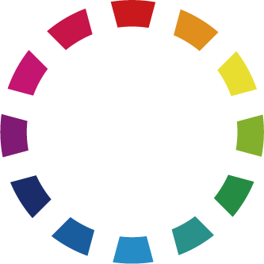
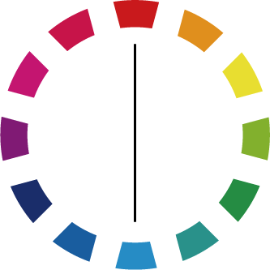
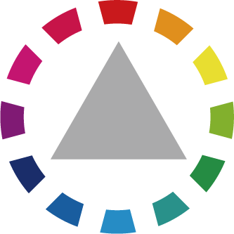
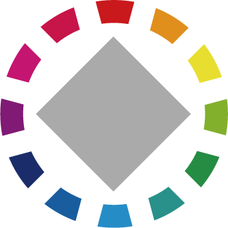

デザインの世界観１（知識）です。デザインの世界観２（ワークフロー）も参照のこと。
芸術の世界観とPhotoshopやIllustratorも参照してください。
僕が思うに、デザインの基本とは視覚に訴えることです。
「視覚効果で伝わることとは何か」ということをよく考えます。
イラスト、飾りつけ、あるいはレイアウトのデザインだけではなく、視覚にどのように訴えるのか、ということを考えれば、おのずと、どのようなデザインが可能であるかが分かります。
2017-09-28より。
デザインの基本として、伝えたい優先順序を決め、伝えるべき要素を大きく、目立つようにしましょう。
フォントは、明朝体、ゴシック体、飾り文字を使います。
出来るだけ特殊なフォントは使わないようにします。
また、同じ字体でも太さの違うファミリーが用意されていることもあります。
欧文のセリフ体は明朝体のような役割、サンセリフ体はゴシック体のような役割があります。
色は、色相は色の違いで、色相環で円のように考えられます。
色相環で反対に位置する色を補色と言って、アクセントカラーなどに使います。
色相環で三角形を取る三色をトライアド、四角形を取る四色をテトラードと言います。
明度は色の明るさで、高いと白に近くなり、低いと黒に近くなります。
彩度は色の鮮やかさで、高いと色が強く出るようになり、低いと無彩色のグレーに近くなります。
明度と彩度が同じぐらいで色相が違うパターンをトーンと言います。
それらを踏まえて、メインカラー、サブカラー、アクセントカラーを決めます。
色は、パソコンではRGB、印刷物ではCMYKを使います。
以下は参考になる配色パターンのサイト。
以下は三原色の基本図。

左が光の三原色、右が色材の三原色です。
補色は、色相環の対極に位置している色のこと。
補色は、CMYのそれぞれの色がRGBに対応していると考えると分かりやすいです。
| 色 | C（シアン） | M（マゼンタ） | Y（イエロー） |
| 補色 | R（レッド） | G（グリーン） | B（ブルー） |
アメリカの色彩学者ジャッドによる4つの色彩の調和論。「プロとして恥ずかしくない新デザインの大原則」を参考に執筆しました。
「一定の法則によって規則的に選ばれた色彩は調和する」という考え方。
| 色 | 説明 |
|---|---|
| アイデンティティー | 同一色相の色のみを用いた配色。 |
| アナロジー | 色相環で30度あたりの位置にある類似色同士の配色。 |
| インターミディエート | 色相環で90度あたりの位置にある色同士の配色。 |
| オポーネント | インターミディエートとダイアードの間の色を組み合わせた配色。 |
| ダイアード（コンプリメンタリー） | 色相環で対向位置にある色同士の「補色」の配色。 |
| スプリットコンプリメンタリー | 基準色相と補色の類似色をくみあわせた3色配色。 |
| トライアド | 色相環を三等分（120度）した位置にある3色の配色。 |
| テトラード | 色相環を四等分（90度）した位置にある4色の配色。 |
| ペンタード | 色相環を五等分（72度）した位置にある5色の配色。 |
| ヘクサード | 色相環を六等分（60度）した位置にある6色の配色。 |
マンセルの色相環：

補色：

トライアド：

テトラード：

そのほか、類似性の原理、なじみの原理、明瞭性の原理があります。「プロとして恥ずかしくない新デザインの大原則」に詳しく書かれています。
フリーフォントはたくさんあります。
以下は具体的にダウンロードできるフリーフォント。
書籍